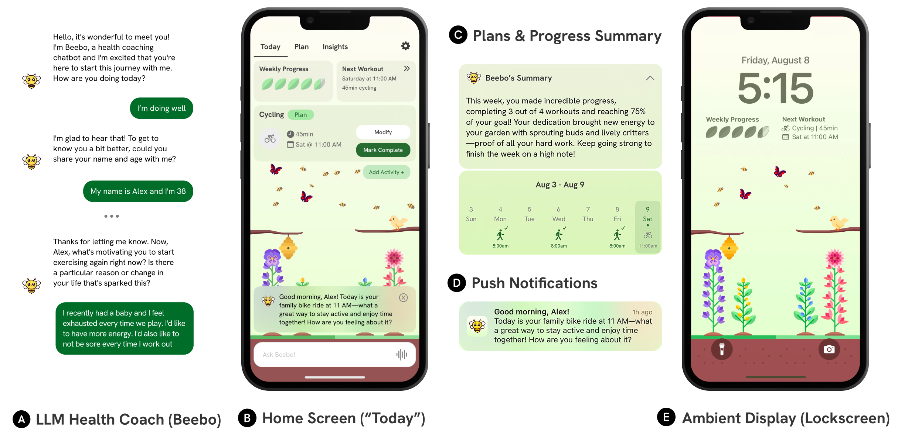

Application Features

When you first open Bloom, you meet Beebo, the app's LLM-powered coaching agent. Beebo kicks things off with a guided onboarding conversation (A: LLM Health Coach), asking about your motivation, past experiences, and struggles with staying active. Beebo follows the Active Choices Program, a scientifically validated counseling framework developed at Stanford's School of Medicine. By the end of onboarding, you and Beebo have built a personalized exercise plan for the upcoming week.
That plan lives on Bloom's Home Screen (B: Home Screen): a clean overview of today's completed and upcoming workouts, with a chat bar at the bottom to jump straight into a conversation with Beebo whenever you need it. Underneath it all, a garden Ambient Display (E: Ambient Display) slowly comes to life: every completed workout is auto-detected using wearable data and grows new plants, turning consistency into something you can actually see.
Need to adjust your plan or make sense of your progress? The Plans & Progress Summary (C) gives you a full breakdown of the week: completed workouts, a day-by-day calendar view, and a personalized written summary from Beebo to keep you motivated and informed. Participants could elect to use the UI to adjust their plans or to chat with Beebo, who could automatically adjust their weekly plan.
As a planned workout approaches, Bloom delivers a push notification (D) — a personalized, LLM-generated nudge from Beebo, written to feel encouraging and speak to the user’s long-term goals. Even when the app is closed, your progress stays visible through the ambient lock screen (E), showing your garden, weekly progress, and next workout at a glance, growing automatically as you exercise.
System Overview

(A) The Plan tab is the user's weekly hub, surfacing their current exercise plan alongside an LLM-generated progress summary, and clearly flags which activities were missed, are upcoming, or already completed. (B) The Insights tab turns raw wearable data into something meaningful: visualizations of key fitness metrics, each paired with a personalized summary from Beebo highlighting trends and milestones. (C) When the user's garden grows (triggered by completing workouts) a celebratory modal pops up, featuring a message from Beebo that ties the visual progress directly to recent activity. (D) In at-will chat, users can request plan changes in plain language. Beebo handles the rest, calling the relevant editing tools behind the scenes and surfacing the updates as inline widgets the user can review and confirm.

(A) System Inputs: Bloom draws on wearable data from Apple's HealthKit API and natural-language input from LLM chats. (B) Application Context: Bloom integrates quantitative context, including wearable data and weekly plan progress, with qualitative context in the form of memory summaries from past conversations. (C) LLM Chatbot: Beebo operates in three modes (onboarding, check-in, and at-will chat) and uses dialogue state management and motivational interviewing prompt chains. All responses are passed through safety filters, and the agent can invoke tools to query health data or generate and edit weekly plans. (D) System Outputs: The LLM produces push notifications, natural-language plan and data summaries, inline chat widgets in response to tool calls, and celebratory progress messages linked to the ambient display (e.g., garden growth).
Field Study Design

We conducted a four-week field study with N = 54 participants, comparing Bloom to a control condition where all LLM features were stripped out and replaced with rule-based UI alternatives (Figure 4). This let us isolate what the AI agent specifically contributes beyond a well-designed user interface.

Participants were randomly assigned to one of the two conditions. Before the study began, we collected three months of Apple HealthKit data to establish an objective baseline for each person's physical activity. The study then kicked off with a one-hour onboarding session, during which a researcher guided participants through app setup and the initial onboarding flow: the same process that, in the Bloom condition, begins with a conversation with Beebo. From there, each week, participants created an exercise plan and aimed to complete it, with weekly check-ins following the Active Choices program to reflect on progress and adjust as needed. Throughout, we gathered both quantitative data through continuous fitness tracking via HealthKit and qualitative feedback through weekly and optional daily surveys. The study closed with an offboarding interview and a final survey. The full timeline is shown in Figure 5.
Study Results
We evaluate Bloom's impact across three complementary data sources: survey-based psychological outcomes, objective wearable data, and system interaction logs. Mindset-related survey outcomes exhibited the most prominent differences between conditions (Figure 6). Participants in the Bloom condition reported larger pre-to-post increases in PA adequacy mindset (the belief that physical activity is beneficial to health) as well as greater enjoyment of exercise and increased self-compassion when goals were missed.

These shifts were consistent across daily, weekly, and pre/post survey measures, whereas the control condition showed comparatively modest gains on the same items. Plan-level interaction data further supports greater engagement and personalization in the Bloom condition (Figure 7): participants produced plans with more activity categories, a greater number of unique activity types, and slightly higher completion rates. They also made more frequent plan edits, suggesting more active and adaptive use of the planning system. Objective wearable data, however, revealed no statistically significant differences between conditions on any of the four PA outcome measures: step count, active energy burned, exercise time, or distance walked. Notably, both conditions demonstrated significant increases relative to the three-month pre-study baseline, with effect sizes in the moderate-to-large range (Cohen's d = 0.59–0.75). These gains translated to a doubling of the proportion of participants meeting the recommended 150 min/week threshold, rising from 36% at baseline to 72% during the study period. Taken together, these findings suggest that while LLM augmentation did not produce significantly greater short-term increases in objective PA, it did produce meaningful shifts in psychological outcomes and plan engagement — factors that behavior change theory identifies as predictive of longer-term behavioral maintenance.

Conclusion
Bloom is the first system to combine LLM-based health coaching with established behavior change interactions, and the first to evaluate that combination in a controlled field study. Our results show that while both conditions significantly increased physical activity, the LLM condition produced meaningful shifts in how participants think and feel about exercise, beliefs that behavior change theory links to longer-term sustainability. Notably, these psychological gains weren't driven by chat alone. Participants consistently cited the weekly plans, push notifications, and especially the ambient garden display as central to their motivation, with the LLM serving as the connective tissue that made each of these interactions feel personal and coherent. This points to a broader lesson for the future of AI coaching: the most effective systems may not be the ones that talk the most, but the ones that weave conversational AI into a richer ecosystem of touchpoints, ambient, visual, and timely, that together shape how people relate to behavior change over time.
Longer studies are needed to confirm whether these mindset shifts translate into lasting behavioral differences, but the design insights here provide a solid foundation for that work. Bloom is fully open source. The codebase, safety benchmarks, and prompts are all available on our GitHub repository.
Citation
@article{jorke2025bloom,
title={Bloom: Designing for LLM-augmented behavior change interactions},
author={J{\"o}rke, Matthew and Gen{\c{c}}, Defne and Teutschbein, Valentin and Sapkota, Shardul and Chung,
Sarah and Schmiedmayer, Paul and Campero, Maria Ines and King, Abby C and Brunskill, Emma and Landay, James A},
journal={arXiv preprint arXiv:2510.05449},
year={2025}
}